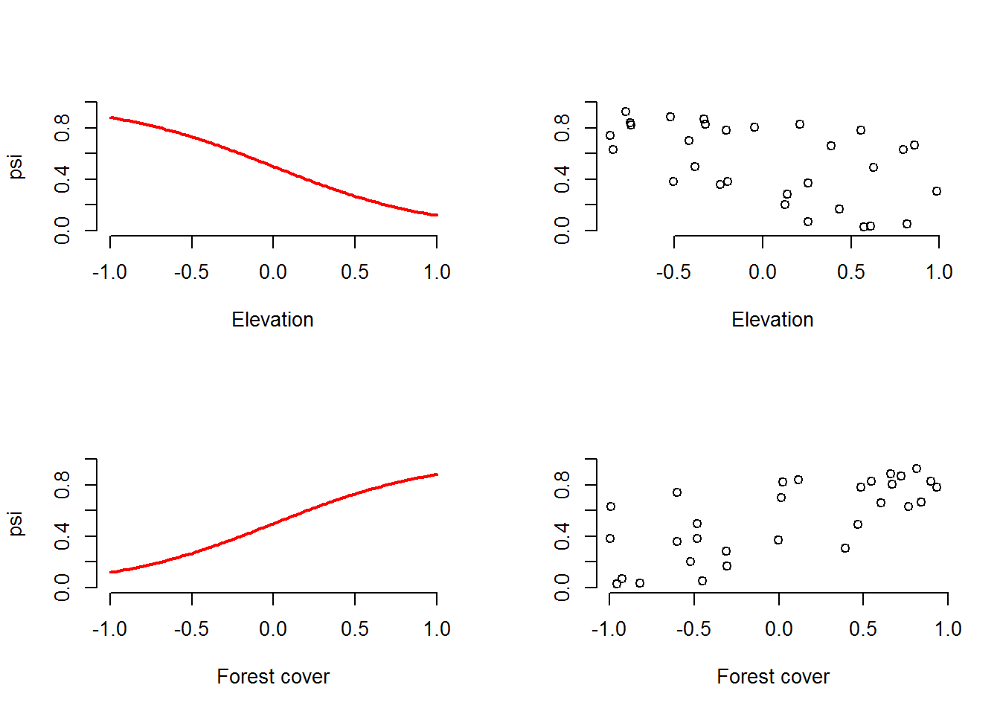

Capítulo 6 Empacando todo en una función
Podría ser de mucha utilidad empacar todo lo que hemos hecho en una sola función que nos permita hacer lo mismo muchas veces repetidamente. Esto hará que podamos diseñar simulaciones de una forma más concisa y flexible y hace más transparente la generación de parámetros usados para generar datos. Asi que vamos a definir una función (que llamaremos data.fn) para generar el mismo tipo de datos que acabamos de crear, asignando argumentos a la función, tales como tamaño de la muestra, efectos de las covariables y direcciones y magnitudes de la interacción de los términos del error de detección y ocupación. Esto hará que nuestro código sea más flexible y eficiente.
###############################
## The function starts here ###
###############################
# Function definition with set of default values
data.fn <- function(M = 60, J = 30, mean.occupancy = 0.6,
beta1 = -2, beta2 = 2, beta3 = 1, mean.detection = 0.3,
alpha1 = -1, alpha2 = -3, alpha3 = 0, show.plot = TRUE){
# Function to simulate occupancy measurements replicated at M sites during J occasions.
# Population closure is assumed for each site.
# Expected occurrence may be affected by elevation (elev),
# forest cover (forest) and their interaction.
# Expected detection probability may be affected by elevation,
# temperature (temp) and their interaction.
# Function arguments:
# M: Number of spatial replicates (sites)
# J: Number of temporal replicates (occasions)
# mean.occupancy: Mean occurrence at value 0 of occurrence covariates
# beta1: Main effect of elevation on occurrence
# beta2: Main effect of forest cover on occurrence
# beta3: Interaction effect on occurrence of elevation and forest cover
# mean.detection: Mean detection prob. at value 0 of detection covariates
# alpha1: Main effect of elevation on detection probability
# alpha2: Main effect of temperature on detection probability
# alpha3: Interaction effect on detection of elevation and temperature
# show.plot: if TRUE, plots of the data will be displayed;
# set to FALSE if you are running simulations.
# Create covariates
elev <- runif(n = M, -1, 1) # Scaled elevation
forest <- runif(n = M, -1, 1) # Scaled forest cover
temp <- array(runif(n = M*J, -1, 1), dim = c(M, J)) # Scaled temperature
# Model for occurrence
beta0 <- qlogis(mean.occupancy) # Mean occurrence on link scale
psi <- plogis(beta0 + beta1*elev + beta2*forest + beta3*elev*forest)
z <- rbinom(n = M, size = 1, prob = psi) # Realised occurrence
# Plots
if(show.plot){
par(mfrow = c(2, 2), cex.main = 1)
devAskNewPage(ask = TRUE)
curve(plogis(beta0 + beta1*x), -1, 1, col = "red", frame.plot = FALSE,
ylim = c(0, 1), xlab = "Elevation", ylab = "psi", lwd = 2)
plot(elev, psi, frame.plot = FALSE, ylim = c(0, 1), xlab = "Elevation",
ylab = "")
curve(plogis(beta0 + beta2*x), -1, 1, col = "red", frame.plot = FALSE,
ylim = c(0, 1), xlab = "Forest cover", ylab = "psi", lwd = 2)
plot(forest, psi, frame.plot = FALSE, ylim = c(0, 1), xlab = "Forest cover",
ylab = "")
}
# Model for observations
y <- p <- matrix(NA, nrow = M, ncol = J)# Prepare matrix for y and p
alpha0 <- qlogis(mean.detection) # mean detection on link scale
for (j in 1:J){ # Generate counts by survey
p[,j] <- plogis(alpha0 + alpha1*elev + alpha2*temp[,j] + alpha3*elev*temp[,j])
y[,j] <- rbinom(n = M, size = 1, prob = z * p[,j])
}
# True and observed measures of 'distribution'
sumZ <- sum(z) # Total occurrence (all sites)
sumZ.obs <- sum(apply(y,1,max)) # Observed number of occ sites
psi.fs.true <- sum(z) / M # True proportion of occ. sites in sample
psi.fs.obs <- mean(apply(y,1,max)) # Observed proportion of occ. sites in sample
# More plots
if(show.plot){
par(mfrow = c(2, 2))
curve(plogis(alpha0 + alpha1*x), -1, 1, col = "red",
main = "Relationship p-elevation \nat average temperature",
xlab = "Scaled elevation", frame.plot = F)
matplot(elev, p, xlab = "Scaled elevation",
main = "Relationship p-elevation\n at observed temperature",
pch = "*", frame.plot = F)
curve(plogis(alpha0 + alpha2*x), -1, 1, col = "red",
main = "Relationship p-temperature \n at average elevation",
xlab = "Scaled temperature", frame.plot = F)
matplot(temp, p, xlab = "Scaled temperature",
main = "Relationship p-temperature \nat observed elevation",
pch = "*", frame.plot = F)
}
# Output
return(list(M = M, J = J, mean.occupancy = mean.occupancy,
beta0 = beta0, beta1 = beta1, beta2 = beta2, beta3 = beta3,
mean.detection = mean.detection,
alpha0 = alpha0, alpha1 = alpha1, alpha2 = alpha2, alpha3 = alpha3,
elev = elev, forest = forest, temp = temp,
psi = psi, z = z, p = p, y = y, sumZ = sumZ, sumZ.obs = sumZ.obs,
psi.fs.true = psi.fs.true, psi.fs.obs = psi.fs.obs))
}
###############################
## The function ends here ###
###############################Una vez que hayamos definido la función y ejecutado su código, podremos llamarla repetidamente y enviar los resultados a la pantalla o asignarlos a un objeto en R. De forma tal que podamos usar el set de datos almacenado en el objeto para un análisis detallado.
# Run this part line by line, taking note of the meaning of the
# model in the comment and hitting Enter after each graph.
# Take in to account that if you do not override all the parameters
# with another value, the function will use the default values.
data.fn() # Execute function with default arguments
data.fn(show.plot = FALSE) # same, without plots
objeto1 <- data.fn(M = 30, J = 10, mean.occupancy = 0.5,
beta1 = -2, beta2 = 2, beta3 = 1,
mean.detection = 0.25, alpha1 = -1,
alpha2 = -3, alpha3 = 0, show.plot = TRUE) # Explicit defaults
Tal vez el uso más sencillo posible para esta función es experimentar de primera mano el error de muestreo: el cuál es la variabilidad natural de realizaciones repetidas (varios sets de datos) de nuestro proceso estocástico por el cual calculamos los set de datos. Vamos a simular 10.000 sets de datos del venado para ver como varían en términos del verdadero número de sitios ocupados (sumZ en el código) y el número de sitios en los que los venados fueron observados al menos una vez. Tenga en cuenta que los datos generados en las 10.000 tienen los parámetros por defecto en los parámetros mean.occupancy y mean.detection.
simrep <- 10000
trueSumZ <- obsSumZ <- numeric(simrep)
for(i in 1:simrep){
if(i %% 1000 ==0 ) # report progress
cat("iter", i, "\n")
data <- data.fn(M = 60,J = 3,show.plot = FALSE) # 60 sitios, 3 muestreos, p=0.3
trueSumZ[i] <- data$sumZ
obsSumZ[i] <- sum(apply(data$y, 1, max))
}## iter 1000
## iter 2000
## iter 3000
## iter 4000
## iter 5000
## iter 6000
## iter 7000
## iter 8000
## iter 9000
## iter 10000plot(sort(trueSumZ), ylim = c(min(obsSumZ), max(trueSumZ)), ylab = "", xlab = "Simulation",
col = "red", main = "True (red) and observed (blue) number of occupied sites")
points(obsSumZ[order(trueSumZ)], col = "blue")
Figure 6.1: Variabilidad natural (error de muestreo) del verdadero número de sitios ocupados (ordenados por tamaño) en color rojo y el número observado de sitios ocupados (en azul). El número de sitios observados/total también se conoce como la ocupación ingenua o (naïve) de la ocurrencia de los venados en 60 sitios en la simulación. El ancho del área azul representa el error inducido por la detección imperfecta. Note la importancia de tener en cuenta este error para tener una mejor idea de la ocupación.
Como ejercicio, cambie el código para generar otras vez las 10.000 simulaciones con una detección media (mean.detection =0.5), alta (mean.detection =0.8), y perfecta (mean.detection =1). Compare las gráficas resultantes.
Ahora podemos usar esta función para generar datos bajo diferentes esquemas de muestreo, variando el número de sitios y el número de muestreos repetidos. Así como también bajo diferentes características ecológicas y de detección, y considerando posibles interacciones entre covariables.
# Run this part line by line, taking note of the meaning of the
# model in the comment and hitting Enter after each graph.
# Take in to account that if you do not override all the parameters
# with another value, the function will use the default values.
data.fn(J = 1, show.plot = T) # Only 1 survey (no temporal replicate)
data.fn(J = 2, show.plot = T) # Only 2 surveys (sites)
data.fn(M = 5, J = 3) # Only 5 sites, 3 counts (repeted visits)
data.fn(M = 1, J = 100) # No spatial replicates, but 100 counts
data.fn(M = 1000, J = 100) # Very intensive sampling. 1000 sites, 100 visits
data.fn(mean.occupancy = 0.6, # psi = 0.6 and
mean.detection = 1, # p = 1 (perfect detection!!!)
show.plot = T)
data.fn(mean.occupancy = 0.95, # psi = 1 a really coomon sp.
mean.detection = 1, # p = 1 (perfect detection!!!)
show.plot = T)
data.fn(mean.occupancy = 0.05, # psi = 0.05 a really rare sp.
mean.detection = 0.05, # p = 0.05 and very hard to detect !!!
show.plot = T)
data.fn(beta3 = 1.5, show.plot = TRUE) # With interaction elev-temp on p
data.fn(mean.occupancy = 0.6, beta1 = -2, beta2 = 2, beta3 = 1,
mean.detection = 0.1, show.plot = TRUE) # p = 1 (low detectability)
data.fn(M = 267, J = 5, mean.occupancy = 0.6, beta1 = 0, beta2 = 0, beta3 = 0,
mean.detection = 0.4, alpha1 = 0, alpha2 = 0, alpha3 = 0, show.plot = TRUE)
# Simplest case with occupancy (0.6) and detection (0.4) constant, no covariate effects
# observe betas = 0, and alphas = 0. This correspond to a kind of null model.FELICITACIONES!!!, si llego hasta acá, y si entendió la simulación de datos y su procedimiento, entonces Ud. entendió totalmente el modelo básico de ocupación, el cual es la piedra angular del muestreo y monitoreo biológico moderno.